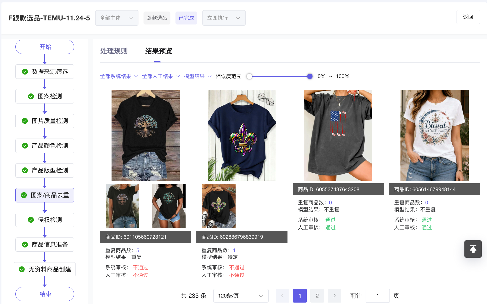
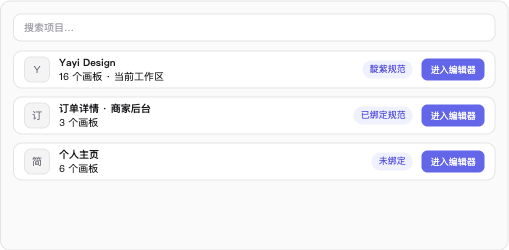
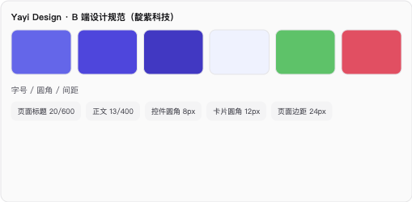
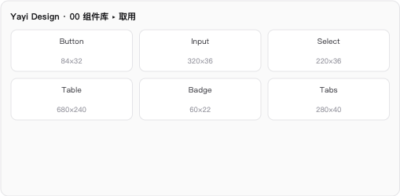
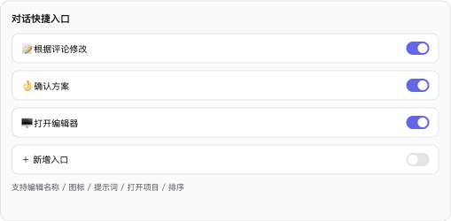
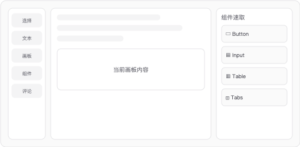
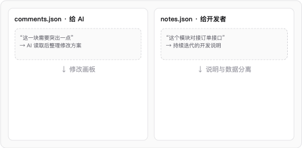

SELECTED WORK · 3 CASES · 2022–2026
点击切换查看项目详情
CASE 01
结论
把「靠运营经验」的商品生产，改成 10+ 个原子能力 + 4 个人机协同的工作流模板。日均开款 500 → 4000，人均管店 10 → 40，单商品模型成本压到 ¥0.45。
链路涉及采集、清洗、图像处理、风险识别、上架五个环节，每个环节都有自己的工具，但没有一处沉淀成可复用的能力。结果是：经验的边际复制成本极高，新人上手要跟三个月。
真正的瓶颈不是「某个模型不够准」，而是「整条链路无法度量」—— 没人说得清哪个环节吃掉了最多的钱、哪个环节错得最贵。
项目总体规划
节点和模板不一次做完。第一阶段先把开款的几种主要方式收成流程节点，挑使用率最高的一条，把工作流、节点配置和人机协作跑通。第二阶段再加「上架」，让人机协作更好用。第三阶段拓展开款模板和节点。
按业务数据的先后依次做，不并行铺开。
单点能力与人机协同
采集、清洗、图像处理、风险识别、上架，任务差异大、工具也散，端到端难评测、中间结果也难查。按目标拆成原子模型，每一步单独评测、单独换、单独停。人工只在必要时介入。
模型任务单独拆分，分别定义标准
成本与效果
任务量、准确率、人工复核、响应时间、单次成本，按节点对照，直观看得见钱花在哪，效果是否符合预期。便于持续迭代。
持续监测数据，持续迭代

CASE 02
结论
把页面组件原子化、把布局在 Flexbox 上扩展，让同一套主题在多个市场独立装修。便于接入AI助手，主题开发效率 +30%，支撑千万级 KA 商家的 GMV，并从 0→1 搭起主题商城的开发者生态。
页面组件不标准，每个新场景都在写新模块，复用率低；布局能力有限，商家想调结构就得改代码；多市场要么复制多套主题，要么手工改配置，维护成本随市场数量线性上升。
组件原子化，不持续堆section
按场景做模块，短期快、长期废。原子化之后，新场景是「组合」而不是「开发」。
配置项变多，商家首次上手会懵，需要更友好的引导
引入布局从Flexbox开始
与前端开发习惯保持一致，对主题开发者和AI友好，便于维护。
需要新增一套完整的新主题做范例
多市场用「基础配置 + 单市场覆盖」
不做多套主题。一份基础配置，每个市场只写差异部分，改一次全局生效。对非多市场商家无感。
页面结构整体增加一个层级，测试覆盖面大
页面组件原子级拆解与标准化，构建基础组件库与可复用组件体系；基于 Flexbox 扩展布局模型，让结构调整不再依赖代码。
「基础配置 + 单市场差异化配置」体系，同一主题在不同国家/地区独立装修，覆盖层优先级与继承规则显式定义。
0→1 搭建主题商城，建立第三方开发者入驻、审核、发布与运营流程，把主题从「项目交付」变成「商品供给」。
CASE 03
结论
把散在目录里的画布、规范、组件与对话，收进一个从入口到交付的设计工作台。固定入口 → 本地工作台 → 对话与画板联动，让高频设计任务有统一入口，也让 AI 修改和开发说明各归其位。
项目散落在不同目录，找项目靠记忆；设计规范、组件清单和编辑器各自维护，看到的组件和实际能取的组件会脱节；同一个需求要在对话里反复描述；AI 修改指令与开发注意事项混在一起，后续维护分不清哪些是任务、哪些是长期说明。此前做过的 100w+ 用户小程序、可编辑画布和 dsh-trafficlight，都是为了验证「个人想法能走到真实使用」，也都暴露了这些协作成本。
左侧导航固定入口，直接进入工作台；工作台集中管理项目、规范、组件和快捷指令；打开项目后，对话与画板并排，修改在对话里发起，结果在画板里即时呈现。

统一搜索、重命名、设图标、绑定规范，并一键进入对应画布项目。

全局维护 token；项目绑定后把规范安装进画布，减少颜色、字号、圆角各自漂移。

工作台直接读取画布的组件页，看到的组件就是编辑器里能取用的组件。

在工作台配置对话上方的按钮：名称、图标、提示词、打开项目与排序；保存后对话即时生效。

画板编辑、组件速取与独立副本就地修改，文字和选项不必回到全局组件里改。

评论是给 AI 的任务
说明是给开发者的业务描述
八年的路径、四次转身、以及每一段带走的判断。